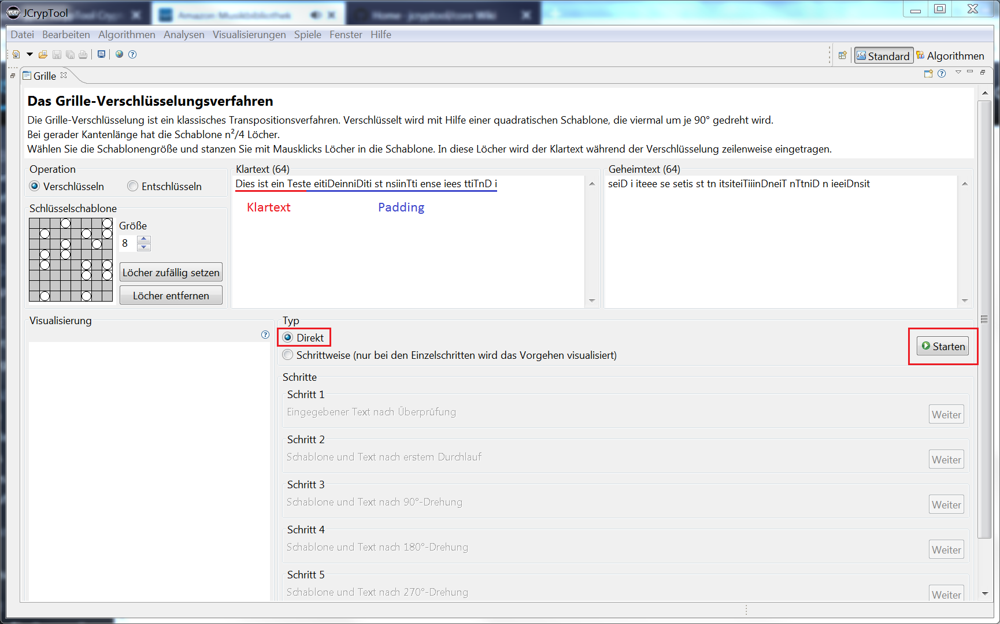
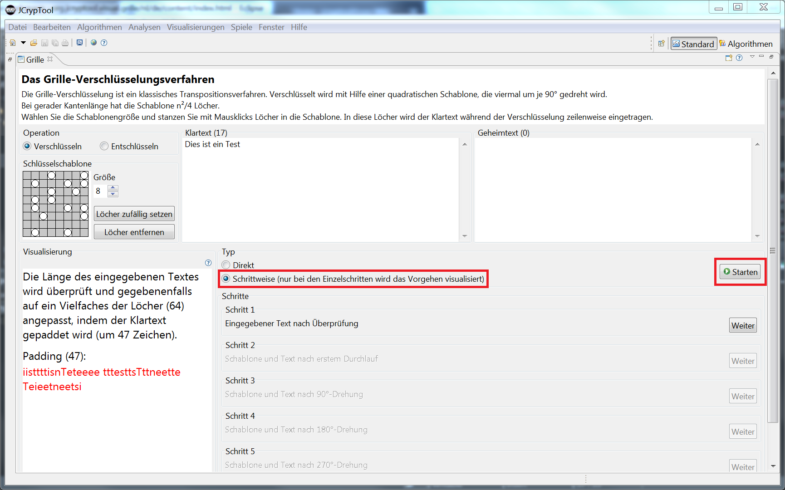
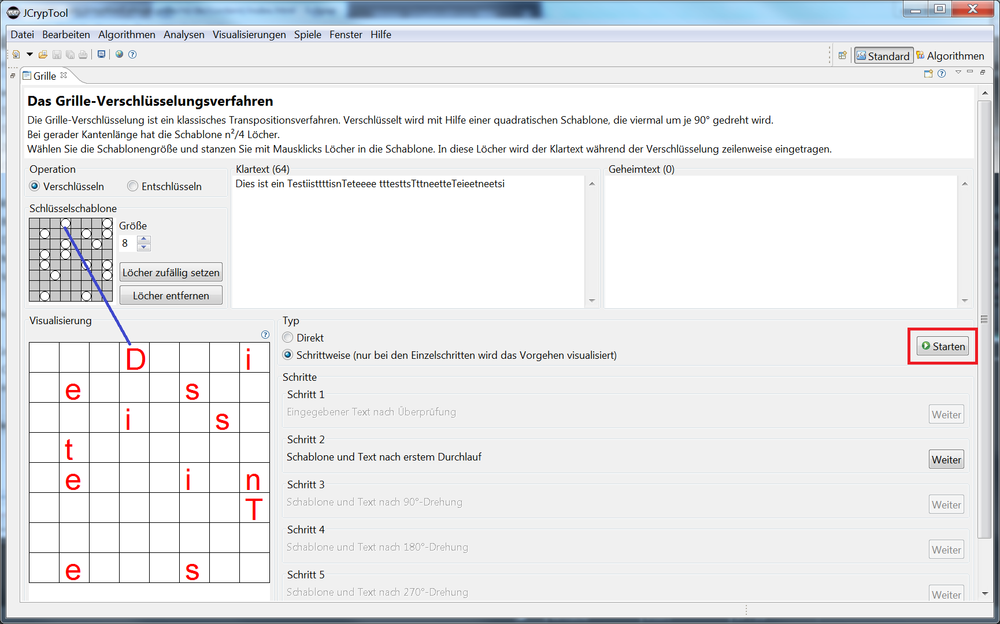
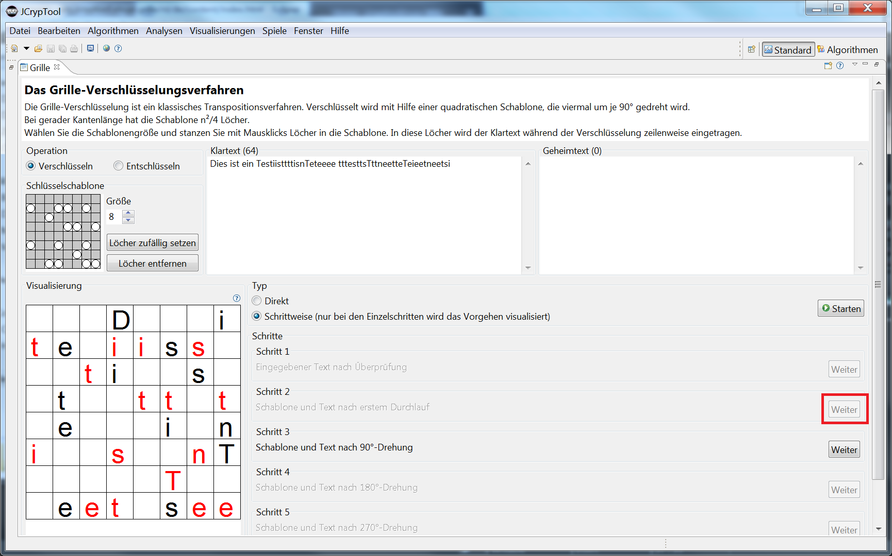
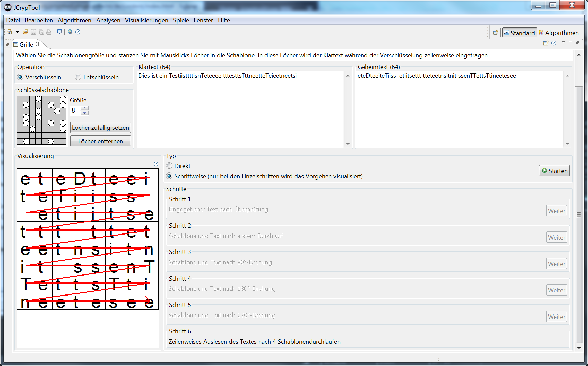
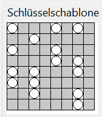
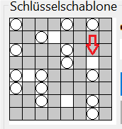
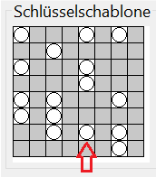

Die "Fleißner-Schablone" (engl. turning grille) ist ein historisches Verschlüsselungsverfahren, erfunden von Eduard Fleißner von Wostrowitz im Jahr 1881. Sie wurde 1916 von den Deutschen im 1. Weltkrieg benutzt.
Dieses Plugin soll helfen, diese spezielle Variante einer Transpositions-Verschlüsselung zu verstehen, indem sie das Verfahren visualisiert und ein einfaches Werkzeug anbietet, eigene Nachrichten zu verschlüsseln und zu entschlüsseln.
Das Verfahren wird als pädagogisches Beispiel historischer Kryptografie vorgestellt. Verwenden Sie das Tool nicht zum Verschlüsseln Ihrer Korrespondenz, da es sich nicht um eine starke Verschlüsselung handelt.
Bemerkung: Dieses Plugin visualisiert das Ver- und Entschlüsseln mit der Fleißner-Schablone (und nur für die geraden Schablonengrößen 4, 6, 8 und 10, was für die pädagogische Visualisierung des Prozesses ausreicht). Daneben gibt es in JCT noch das neuere Plugin Fleißner-Analyse, in dem man nicht nur ver- und entschlüsseln kann, sondern Fleißner-Geheimtexte auch automatisiert brechen kann (und das für gerade und ungerade Schablonengrößen).
Die Fleißner-Schablone selbst ist ein quadratisches Stück Papier mit n² Feldern, n∈ℕ, n > 0. Jedes vierte Feld ist herausgeschnitten. Der zu verschlüsselnde Text wird – durch die Löcher dieser Maske – zeilenweise auf ein darunter liegendes Blatt geschrieben. Sind alle Löcher gefüllt, so wird die Schablone um 90° im Uhrzeigersinn gedreht und das Hineinschreiben des Textes fortgesetzt; dies wird noch 2 mal wiederholt. Am Ende sollte jedes Feld des darunter liegenden Papiers genau mit einem Zeichen gefüllt sein. Damit dies so funktioniert, müssen die Löcher in einer bestimmten Weise auf der Schablone verteilt sein.
Den resultierenden Geheimtext erhält man durch zeilenweises Auslesen. Alle Buchstaben darin sind "verwürfelt" (oft wird das auch als permutiert oder transponiert bezeichnet).
Zum Entschlüsseln wird der empfangene Geheimtext in eine passende quadratische Form (quadratisches Raster von vorgegebener Seitenlänge) eingetragen. Dann wird eine identische Schablone auf die Nachricht gelegt und man erhält den Klartext, indem man zeilenweise ausliest (mit dreimaligem Drehen der Schablone).
Ist die Schablonengröße (Kantenlänge) eine gerade Zahl, gibt es (n²)/4 Löcher. Ist die Schablonengröße eine ungerade Zahl, gibt es ein ausgezeichnetes Feld in der Mitte, das bei keiner Rotation freiliegt. Damit ergeben sich (n²-1)/4 Löcher.
Die Fleißner Schablone wurde erfunden von Eduard Fleißner von Wostrowitz, einem österreichischen Oberst. Dieser verfasste das „Handbuch der Kryptografie“, das 1881 in Wien erschien [BAU95, 80]. Das Verschlüsselungsverfahren wurde Ende 1916 im ersten Weltkrieg von Deutschland kurzzeitig verwendet. Die Schablonen hatten Namen, wie z.B. ANNA für die 25 Großbuchstaben, BERTA für die mit 36 Feldern und so weiter. Als die Franzosen 1917 das Verfahren erkannten und eine Dechiffrierung sich als sehr einfach herausstellte, wurde das System nach viermonatiger Benutzung verworfen [KAN97, 309].
Selten wurden auch Varianten eingesetzt, die weniger als die maximal möglichen Löcher in der Schablone enthielten.
Anders als bei vielen anderen Verfahren ist hier der Schlüssel nicht beliebig wählbar, sondern unterliegt bestimmten Regeln. Unterteilt man die Schablone in 4 Quadranten, kann eine Zahl nur in einem der Quadranten ausgestochen sein.
Für den Standardfall mit einer geraden Seitenlänge gibt es S = 4^(n²/4) mögliche Schlüssel. Die möglichen Transpositionen hängen nicht von der Textlänge sondern nur von der Schlüsselgröße ab. Bei einer Seitenlänge von n=6 sind dies 262.144 mögliche Schlüssel. Ein Schlüssel beschreibt dabei die Verteilung der Löcher. Er kann für n=6 bspw. ff. Wert haben: 3 7 11 13 17 21 27 31 35.
Wenn man die Standardeinstellung für Größe (6) lässt, eine Schablone erzeugt durch Klick auf den Button "Löcher zufällig setzen" und den Klartext eingibt, erhält man sofort den Geheimtext durch Klick auf den Button "Starten".
Nun sieht man im Geheimtext-Feld das verschlüsselte Ergebnis. Im Klartextfeld wurde der eigentliche Klartext gepaddet, so dass seine Länge der Anzahl der Felder im Quadrat entspricht (n²).

Im folgenden Beispiel wurde die Größe der Schablone auf 8 erhöht und dann der Button "Löcher zufällig setzen" gedrückt. Der Schlüssel wird unter der Schablone als Folge von Zahlen angezeigt, die die Position der Löcher bezeichnen.
Wieder wurde als Klartext "Dies ist ein Test" gewählt. Vor dem Drücken des Buttons "Starten" wurde der Visualisierungs-Typ (Vorgehensweise) auf "Schrittweise" geändert.
(1) Nach dem Klick auf "Starten" werden links in der Gruppierung "Visualisierung" das Padding und seine Länge (47) angezeigt. Zusammen mit dem Klartext der Länge 17 ergeben sich 64 Byte.

(2) Nach dem Klick auf "Weiter" in Schritt 1 werden links in der Gruppierung "Visualisierung" die ersten 16 Zeichen verteilt – direkt erkennen kann man nur 13 rote Buchstaben, denn die 3 verteilten Leerzeichen sieht man nicht.

Die blaue Linie zeigt das Loch in der Schablone und den zugehörigen Buchstaben auf dem darunter liegenden Papier.
(3) Nach dem Klick auf "Weiter" in Schritt 2 werden links in der Gruppierung "Visualisierung" die nächsten 16 Zeichen verteilt (wieder rot dargestellt).

Die Schlüsselschablone oben wird passend mitgedreht angezeigt.
(4) Am Ende (nach 3 weiteren Klicks auf "Weiter") sieht man den fertigen Geheimtext (im Feld Geheimtext), der zeilenweise aus dem unter der Schablone liegenden Papier ausgelesen wird.

1) Wenn Sie nochmal auf "Starten" klicken, geht es von vorne los.
2) Statt sich eine Schablone (Lochmaske) zufällig erzeugen zu lassen, kann man sie auch per Mausklick setzen oder ändern.
a) Wenn Sie die Maske durch Klick auf "Löcher entfernen" leerten, können Sie in die freien weißen Felder klicken. Dort wird das Loch gestanzt und die zugehörigen 3 Felder in den anderen Quadranten grau unterlegt, um anzuzeigen, dass sie für ein Loch blockiert sind.
b) Wenn Sie eine schon vorhandene Maske ändern wollen, klicken Sie einfach auf ein "Loch" und es wird wieder geschlossen.
Solange nicht alle Löcher gesetzt sind, ist der Starten-Button inaktiv. Es können also keine Schablonen erstellt werden, die nicht die maximal mögliche Anzahl Löcher haben.



[BAU95]Bauer, Friedrich L., Entzifferte Geheimnisse, Methoden und Maximen der Kryptologie, 2. Auflage,Springer Verlag, Berlin 1995
[KAN97]Kahn, David, The Codebreakers, The Story Of Secret Writing, Scribner, New York 1997
[SCHN03]Schneider, Matthias, Die Fleißner-Schablone, Seminararbeit im Bereich IT-Sicherheit & Kryptologie, Siegen 2003
[Wikipedia]Fleißner Schablone, https://de.wikipedia.org/wiki/Flei%C3%9Fnersche_Schablone